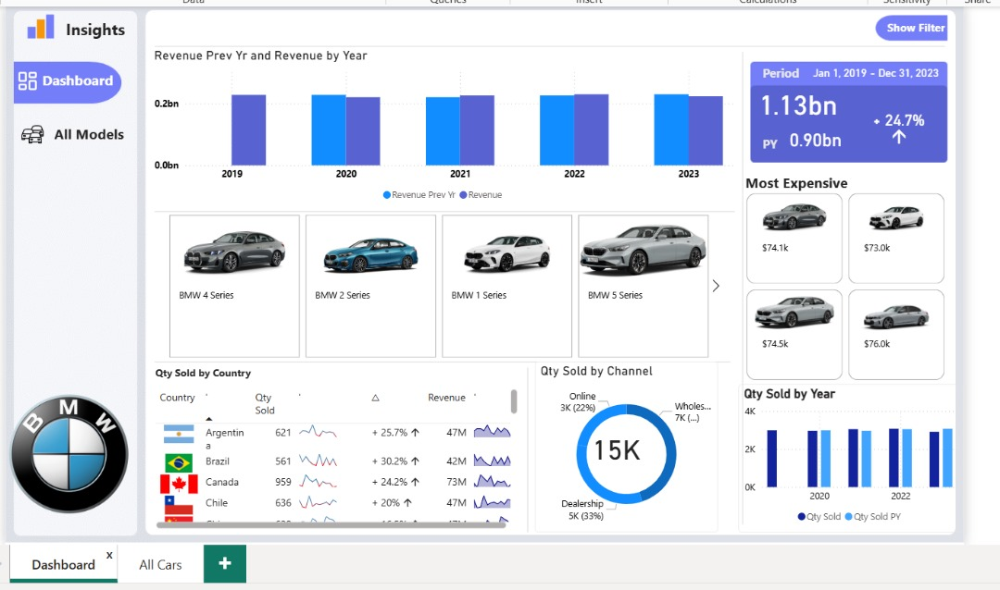

Car Sales Dashboard
The Car Sales Performance Dashboard provides a comprehensive overview of vehicle sales data to support strategic decision-making across dealerships and manufacturers. It features key metrics such as total units sold, revenue by car model and brand, sales performance over time, and regional sales distribution. Interactive filters allow users to drill down by car type (SUV, sedan, etc.), fuel type, customer demographics, and dealership location. The dashboard also includes trend analysis on seasonal demand, top-performing sales reps, and comparison of new vs. used vehicle sales. Designed for clarity and interactivity, it offers both high-level summaries and detailed breakdowns to help sales managers, analysts, and marketing teams track performance, identify opportunities, and optimize inventory and promotional strategies.
Tools Used: Excel & Power BI
Blinkit Analysis
The Blinkit Analysis Dashboard provides a comprehensive overview of customer behavior, order trends, and product performance within the quick commerce space. It features key metrics such as total orders, revenue, delivery time, top-selling products, and customer retention rates. Users can filter data by category, location, time of day, and promotional impact to uncover patterns in consumer demand and operational efficiency. The dashboard supports business teams in optimizing inventory, improving delivery logistics, and enhancing the customer experience. It is a powerful tool for data-driven decision-making in the fast-paced food and grocery delivery sector.
Tools Used: Excel, Power BI & Power Point
Customer Sales Analysis
This Customer Sales Analysis project focused on cleaning and preparing raw sales data using Python for further analysis. The process involved handling missing values, correcting data types, removing duplicates, standardizing categorical fields (e.g., product names, regions), and generating new features such as total sales per order and customer purchase frequency. Python libraries such as Pandas, NumPy, and Datetime were used to streamline the workflow and ensure data integrity. The result is a clean, structured dataset ready for in-depth sales analysis, modeling, or visualization, supporting more accurate business insights and decision-making.
Tools Used: Python
Road Accident Dashboard
The Road Accidents Analysis Dashboard delivers actionable insights into traffic incident patterns, accident severity, and contributing factors. It features key metrics such as accident counts by region, time of day, weather conditions, and vehicle type involvement. Users can explore trends in fatal vs non-fatal accidents, identify high-risk locations (hotspots), and assess the impact of driver behavior, alcohol use, or speeding. The dashboard also includes demographic analysis of victims and drivers, allowing segmentation by age group, gender, and license status. With interactive filters and geospatial mapping, it offers a comprehensive view of road safety trends. This tool is ideal for transport authorities, policymakers, urban planners, or safety analysts looking to reduce accident rates and improve public safety through data-driven decisions.
Tools Used: Excel, Power BI & Power Point